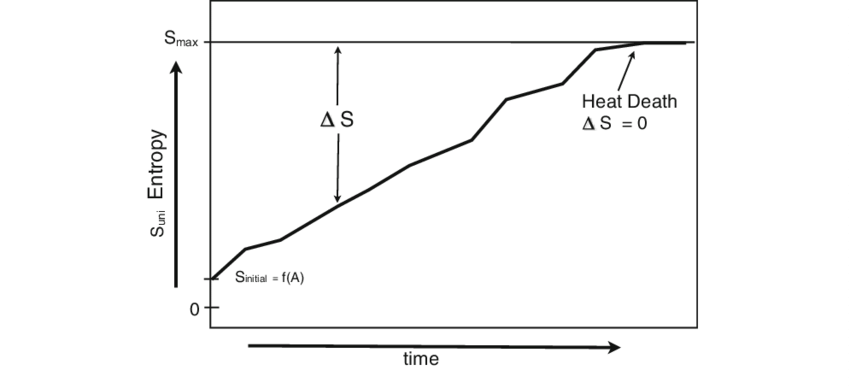
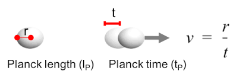

Limite Teórico 1: Comprimento de Planck
O comprimento de Planck, aproximadamente 1,616 × 10^-35 metros, representa a menor escala significativa para medir distâncias no universo segundo a física teórica moderna. Abaixo desse limite, os conceitos clássicos de espaço e tempo deixam de fazer sentido, e os efeitos da gravidade quântica tornam-se dominantes. O espaço-tempo pode ser visto como granular, em “blocos” de tamanho mínimo, impondo limites fundamentais à forma como energia, partículas e informação podem se propagar.
Esse limite é essencial para o desenvolvimento de teorias de gravidade quântica e na tentativa de unificar a relatividade geral com a mecânica quântica. Embora ainda não mensurável experimentalmente, ele fornece restrições teóricas cruciais sobre a estrutura do universo em escalas extremamente pequenas, influenciando o entendimento de buracos negros primordiais e do universo logo após o Big Bang.

Limite Teórico 2: Entropia e Informação
A segunda lei da termodinâmica estabelece que a entropia total de um sistema isolado não diminui, definindo um limite para a organização de energia e matéria no universo. Esse princípio determina a direção natural de processos físicos e influencia fenômenos de escalas microscópicas até cosmológicas, como a evolução de estrelas, buracos negros e fusões galácticas.
Em astrofísica, a entropia está diretamente relacionada à informação contida em sistemas gravitacionais, como mostra o Teorema de Bekenstein, que conecta a quantidade máxima de informação à área do horizonte de eventos de um buraco negro. Assim, entropia e informação representam limites fundamentais sobre a organização do universo e a transmissão de dados em escalas extremas.

Limite Teórico 3: Densidade de Energia Máxima
A densidade de energia máxima, ou densidade de Planck, define um limite teórico para quão compacta a energia pode se tornar antes que a gravidade quântica domine o espaço-tempo. Acima desse limite, os modelos clássicos de física falham, e fenômenos quânticos extremos, como a formação de buracos negros primordiais, se tornam inevitáveis.
Compreender essa densidade máxima é fundamental para investigar a origem do universo, a física do Big Bang e as condições iniciais que levaram à expansão cósmica. Esse limite conecta a mecânica quântica à relatividade geral, mostrando restrições sobre a estabilidade de matéria e energia em estados extremos.

Limite Teórico 4: Escala de Planck de Tempo
O tempo de Planck, aproximadamente 5,39 × 10^-44 segundos, define a menor unidade temporal significativa segundo a física teórica. Em intervalos menores que esse, as leis conhecidas de causalidade e movimento deixam de se aplicar, e efeitos de gravidade quântica tornam-se dominantes.
Esse limite é crucial para entender a evolução inicial do universo, permitindo definir o “primeiro instante” após o Big Bang em que conceitos de espaço-tempo ainda são válidos. Ele estabelece restrições fundamentais sobre como processos físicos podem ocorrer em escalas extremamente curtas e fornece parâmetros essenciais para teorias de unificação física.
